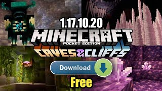

Samentum OP

Minecraft free download for android. Minecraft is a video game in which players create and break apart various kinds of blocks in three-dimensional worlds. The game's two main modes are Survival and Creative. In Survival, players must find their own building supplies and food. They also interact with blocklike mobs, or moving creatures. Is there an Age Restriction? Minecraft has been rated as suitable for 7+ up to 13+ depending on which version of the game you are playing. Children aren't asked for proof of age when they sign up.
1.17, the first release of Caves & Cliffs, is a major update to Java Edition announced at Minecraft Live 2020 and released on June 8, 2021. This update adds amethyst geodes along with amethyst blocks and items, copper ore and its derived forms, deepslate and its variants, and the goat, glow squid and axolotl mobs.
On April 14, 2021, Mojang Studios announced that the update would be split into two updates due to the amount and complexity of content, as well as team health.[3] Multiple features such as revamped mountain and cave generation, the lush caves and dripstone caves biomes, and increased world height were removed on 21w15a, and are set to release for 1.18.[4] A data pack was included in the Minecraft.net article for 21w15a that re-enabled the removed features, and subsequent snapshots updated this data pack. The latest data pack for the full 1.17 release, named the Caves & Cliffs: Part II Preview, can be downloaded here.
ㅤ ㅤ ㅤ ㅤ ㅤ ㅤ ㅤ ㅤ ㅤ ㅤ ㅤ ㅤ ㅤ ㅤ ㅤ ㅤ ㅤ ㅤ ㅤ ㅤ ㅤ ㅤ ㅤ ㅤ ㅤ ㅤ ㅤ ㅤ ㅤ ㅤ ㅤ ㅤ ㅤ ㅤ ㅤ ㅤ ㅤ ㅤ ㅤ ㅤ ㅤ ㅤ ㅤ ㅤ ㅤ ㅤ ㅤㅤ ㅤ ㅤ ㅤ ㅤ ㅤ ㅤ
ㅤ
ㅤ
ㅤ
Minecraft 1.17 New Features -
• Added Dripstone Block, Pointed Dripstone and dripstone caves
• Added New Block of Amethyst geodes
• Added Raw Iron, Copper, and Gold
• Added Candles
• Added Copper Ingot, Copper Ore
• Added New Ore Texture
• Added Tinted Glass
• Added Lava Cauldron
• Added Lightning Rod
• Added Lush Caves Block
• Added Powder Snow
• Added Amethyst Shards
• Added Glow Squid And The Glow Berry
• Added The Goat
ㅤ ㅤ ㅤ ㅤ ㅤ ㅤ ㅤ ㅤ ㅤ ㅤ ㅤ ㅤ ㅤ ㅤ ㅤ ㅤ ㅤ ㅤ ㅤ ㅤ ㅤ ㅤ ㅤ ㅤ ㅤ ㅤ ㅤ ㅤ ㅤ ㅤ ㅤ ㅤ ㅤ ㅤ ㅤ ㅤ ㅤ ㅤ ㅤ ㅤ ㅤ ㅤ ㅤ ㅤ ㅤ ㅤ ㅤㅤ ㅤ ㅤ ㅤ ㅤ ㅤ There are many more in-depth features added in the 1.17 update that can't be summarized.
ㅤ ㅤ ㅤ ㅤ ㅤ ㅤ ㅤ ㅤ ㅤ ㅤ ㅤ ㅤ ㅤ ㅤ ㅤ ㅤ ㅤ ㅤ ㅤ ㅤ ㅤ ㅤ ㅤ ㅤ ㅤ ㅤ ㅤ ㅤ ㅤ ㅤ ㅤ ㅤ ㅤ ㅤ ㅤ ㅤ ㅤ ㅤ ㅤ ㅤ ㅤ ㅤ ㅤ Download Minecraft New Official 1.17 Update
ㅤ ㅤ ㅤ ㅤ ㅤ ㅤ ㅤ ㅤ ㅤ ㅤ ㅤ ㅤ ㅤ ㅤ ㅤ ㅤ ㅤ ㅤ ㅤ ㅤ ㅤ ㅤ ㅤ ㅤ ㅤ ㅤ ㅤ ㅤ ㅤ ㅤ ㅤ ㅤ ㅤ ㅤ ㅤ ㅤ ㅤ ㅤ ㅤ ㅤ ㅤ ㅤ ㅤ
ㅤ ㅤ ㅤ ㅤ ㅤ ㅤ ㅤ ㅤ ㅤ ㅤ ㅤ ㅤ ㅤ ㅤ ㅤ ㅤ ㅤ ㅤ ㅤ ㅤ ㅤ ㅤ ㅤ ㅤ ㅤ ㅤ ㅤ ㅤ ㅤ ㅤ ㅤ ㅤ ㅤ ㅤ ㅤ ㅤ ㅤ ㅤ ㅤ ㅤ ㅤ ㅤ ㅤ Pocket Edition
Open the Play Store or AppStore on your device.Now search for Minecraft.
After that, click on the "Update" button to download Minecraft 1.17.
If you have not purchased the paid version then you can download from HERE
ㅤ ㅤ ㅤ ㅤ ㅤ ㅤ ㅤ ㅤ ㅤ ㅤ ㅤ ㅤ ㅤ ㅤ ㅤ ㅤ ㅤ ㅤ ㅤ ㅤ ㅤ ㅤ ㅤ ㅤ ㅤ ㅤ ㅤ ㅤ ㅤ ㅤ ㅤ ㅤ ㅤ ㅤ ㅤ ㅤ ㅤ ㅤ ㅤ ㅤ ㅤ ㅤ ㅤ Java Edition
Open your Minecraft Launcher.
Make sure to update the Minecraft launcher to the latest version if it's not already updated.
Then Go to the "Installations" tab.
Make a fresh new installation of the latest 1.17.0 version.
After installing, Click the "Play" button to play the new Minecraft 1.17.
ㅤ ㅤ ㅤ ㅤ ㅤ ㅤ ㅤ ㅤ ㅤ ㅤ ㅤ ㅤ ㅤ ㅤ ㅤ ㅤ ㅤ ㅤ ㅤ ㅤ ㅤ ㅤ ㅤ ㅤ ㅤ ㅤ ㅤ ㅤ ㅤ ㅤ ㅤ ㅤ ㅤ ㅤ ㅤ ㅤ ㅤ ㅤ ㅤ ㅤ ㅤ ㅤWindows 10 Edition (Bedrock)
Go to the Microsoft Store.
Search for Minecraft or simply go to "Updates."
From here, click on the "Get Updates" button to update Minecraft.
After installing you can enjoy the latest Caves and Cliffs update.
ㅤ ㅤ ㅤ ㅤ ㅤ ㅤ ㅤ ㅤ ㅤ ㅤ ㅤ ㅤ ㅤ ㅤ ㅤ ㅤ ㅤ ㅤ ㅤ ㅤ ㅤ ㅤ ㅤ ㅤ ㅤ ㅤ ㅤ ㅤ ㅤ ㅤ ㅤ ㅤ ㅤ ㅤ ㅤ ㅤ ㅤ ㅤ ㅤ ㅤ